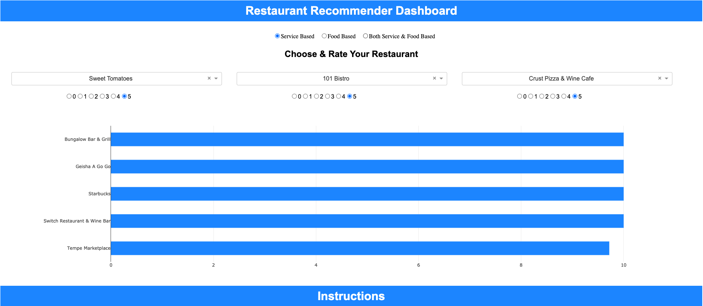
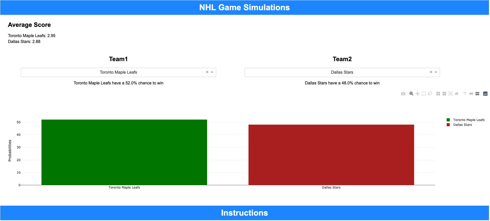
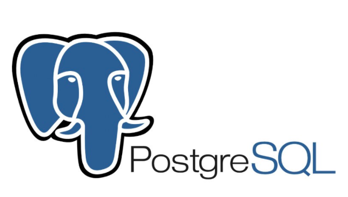
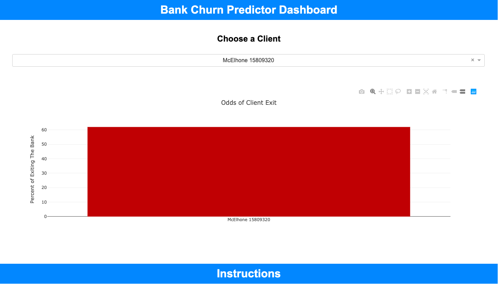
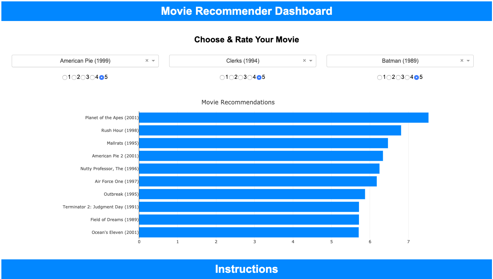

About Me

I'm a Data Analyst, skilled in Excel, Tableau, PowerPoint, SQL, and Python. Having played competitive hockey for 14 years, I understand what it takes to compete in a team environment and is why I consistently seek to learn and grow with the vision of producing immediate and long-term results.

In this project, I underwent an analysis of the S&P 500 Index as an investment. This project can be used to help passive investors understand the relationship the index has with the strength of the American economy.
Lariat Rent-A-Car Analysis

In this project, I underwent analysis to discover opportunities to improve Lariat's net revenue margin by 10%. I created a dashboard in Excel to help deliver well-rounded observations of the company's current microeconomics and to allow for flexible insights into how alternative adjustments affect the company financially.
Example adjustments may look like; an increase or decrease to Lariat's fleet, an increase or decrease in insurance premiums, an increase or decrease in costs of the fleet, etc.
Mortgage-Backed Securities Analysis

In this project, I underwent an analysis of properties found in a mortgage-backed bond. This project can be used to help passive investors understand and find value in the relationships of underlying assets backing financial instruments.
Restaurant Recommendation Engine & Dashboard

In this project, I underwent text summarization to reduce the irrelevant text in lengthy restaurant reviews, this helped when applying topic modeling. The topic modeling was used to distinguish reviews that were written to critique the food or service quality. Once the data was established, I developed a recommendation engine that uses a star system and product correlation to recommend restaurants contingent on the user's choice of being recommended restaurants for food quality, service quality, or both. I built a dashboard using Plotly and Dash to utilize the recommendation engine and deployed it to Heroku's server.
username: data
password: analyst
The entirety of this project can be used for app or service providers looking to carry out the functionality of this particular engine and/or take pieces of the project to be utilized for specific tasks.
NHL Monte Carlo Simulation Dashboard

The supporting data is from the naturalstattrick.com via CSV file. The dashboard was built in Python. The Dashboard utilizes Monet Carlo simulations to generate probabilities of winning between two chosen teams. The dashboard has been pushed to Heroku’s server:
username: data
password: analyst

PostgreSQL and Python were both used to query a Bitcoin database. Statistical analysis was done via two-sample t-tests and correlation tests to help describe the intraday statistical relationships and patterns of Bitcoin. Additionally, separate PostgreSQL example queries and database creation scripts can be viewed (Bitcoin data is not used).

MySQL and Python were both used to perform analysis on Kickstarter's start-up funding campaign data. The report seeks to prescribe recommendations to run a successful funding campaign. All scripts of code and tables produced can be found in the appendices of the report.
Bank Churn Predictor Dashboard

The supporting data is from 10,000 European banking clients via a CSV file. The dashboard was built in Python. The Dashboard utilizes an artificial neural network to generate the probabilities of clients exiting the bank. The dashboard has been pushed to Heroku’s server:
username: data
password: analyst
Movie Recommender Dashboard

The dashboard uses data from grouplens.org. The dashboard was created in Python. The utility of the dashboard is to leverage your movie picks and ratings to generate an accurate list of movie recommendations. The dashboard has been pushed to Heroku’s server:
username: data
password: analyst
Metro Housing Prices Dashboard

The supporting data was wrangled using the St. Louis Federal Reserve Bank's API. Further data was collected via a CSV file from zillow.com. The dashboard allows the user to choose a metro out of 60, a corresponding segment, and an appropriate rate of GDP growth for the state, and by doing so, the dashboard created in Python generates a linear model and is used to predict 7 years of average housing prices. A Pearson-R calculation is calculated to demonstrate the strength of the relationship between state GDP and its metro's home prices, followed by the annually compounded rate of return on investment if the home in that segment for that metro was purchased in 2018. The dashboard has been pushed to Heroku’s server:
username: data
password: analyst
Stock Income Yield Dashboard

The supporting data is from EDGAR's API. Using Google Sheets and web-scrapers, additional data was collected. The dashboard displays a simplified approach to reading into a company’s value by its per-share yields. The dashboard has been pushed to Heroku’s server:
username: data
password: analyst
Start-Up Quadrant Dashboard

The dashboard focuses on 1000 start-up companies. It allows for easy data mining and manipulation concerning the following criteria: high revenue, low expenses, and high growth. The dashboard was created in Tableau.
Coal Terminal Maintenance Analysis Report

The report focuses on the idle capacity thresholds of coal reclaimers before needing maintennce. The report was created in Tableau.
Retail Analysis Dashboard

The dashboard focuses on Superstore's retail data. It allows for easy data mining for analysis on performance for various measures and dimensions of the business. The dashboard was created in Tableau.
Canadian Provincial GDP Per Capita & Population Dashboard

The dashboard displays Canadian provincial data excluding the Yukon and Northwest Territories (Stats Canada). It allows the user to visualize the increase in provincial populations and GDP per capita. The dashboard allows for a trailing visual for a timeline from 1926-2016.
Canadian Population Dashboard

The dashboard displays the economics of the Canadian population by province excluding the Yukon and Northwest Territories (Stats Canada). It reveals trailing visuals of the ongoing changes in death and births over time from 1991-2018.
Famous World Demographic Analysis Dashboard

A famous visualization and analysis by Hans Rosling. The dashboard reveals the changes in global life expectancy by fertility rates while displaying the population size of each global region. The timeline is from 1960-2012.
EDGAR Quantitative Price Evaluator Dashboard

This dashboard is for display purposes onlydue to the lack of a transferable environment and the expiration of the EDGAR API. The Dashboard uses the EDGAR API with various web-scrapers in Python and has Excel call back these Python scripts to populate the dashboard. The data is used to create easy understand ratios and visuals on individual companies' per-share value.